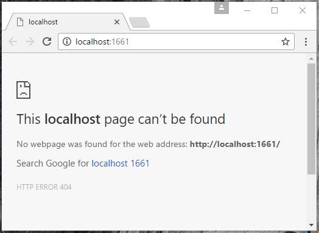
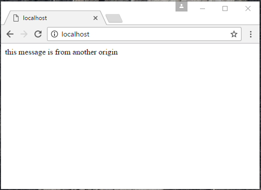
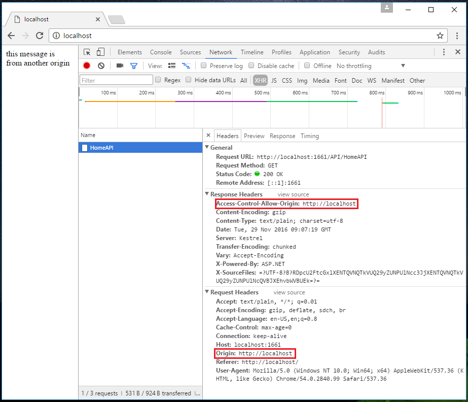

How to enable CORS(Cross-origin resource sharing) in ASP.NET Core
How to enable CORS(Cross-origin resource sharing) in ASP.NET Core
Introduction
CORS(Cross-origin resource sharing) is a mechanism that allows restricted resources (e.g. fonts) on a web page to be requested from another domain outside the domain from which the resource originated. A web page may freely embed images, stylesheets, scripts, iframes, videos. However, certain “cross-domain” requests which are notably AJAX requests are automatically forbidden by the same-origin security policy.
CORS defines a way in which a browser and server can interact to determine whether or not it is safe to allow the cross-origin request. It allows for more freedom and functionality than purely same-origin requests, but is more secure than simply allowing all cross-origin requests. It is a recommended standard of the W3C.
This sample demonstrate how to enable CORS in ASP.NET Core.
Sample prerequisites
• .NET Core 1.0 or later version(s). [.NET Core + Visual Studio tooling]
• Microsoft Visual Studio 2015 update3 or above. [Visual Studio 2015]
Building the sample
Setup the client side web site.
• Open the Internet Information Services (IIS) Manager.
• Select default web site, and click Basic Settings button.

• Set the default web site source folder as the sample folder.


• Open the sample solution “CSASPNETCoreCORS” using Visual Studio.
• Right click the project “CSASPNETCoreCORS” and select Restore packages.

• Press F6 Key or select Build -> Build Solution from the menu to build the sample.
Running the sample
• Open the Sample solution using Visual Studio, then press F5 Key or select Debug -> Start Debugging from the menu.
• When the web application is running, you can see a 404 result.

• Ignore this, and go to http://localhost. You will see the page as below.

This page will post a request to http://localhost:1661, and print the result to the page.
• Open the debug tool in the browser, and switch the Network tab, then refresh this page. You will see the network request in the Network table.

The “Origin” header gives the site domain that is providing the request, if the server allows the request, it will set the Access-Control-Allow-Origin header.
If the response does not include the Access-Control-Allow-Origin header, the AJAX request will fail. In other word, the browser will disallow the request. Even if the server returns a successful response, the browser will not make the response available to the client application.
Using the code
At Startup.cs
public void ConfigureServices(IServiceCollection services)
{
#region case 1:
//services.AddCors();
#endregion
#region case 2,3:
services.AddCors(options =>
{
options.AddPolicy("AllowSpecificOrigin", builder =>
{
builder.WithOrigins("http://localhost", "https://www.microsoft.com");
});
//options.AddPolicy("AllowAllOrigins", builder =>
//{
// builder.AllowAnyOrigin();
// // or use below code
// //builder.WithOrigins("*");
//});
});
#endregion
services.AddMvc();
}
public void Configure(IApplicationBuilder app, IHostingEnvironment env, ILoggerFactory loggerFactory)
{
#region case 1:
//app.UseCors(builder => builder.WithOrigins("http://localhost"));
//app.Run(async (context) =>
//{
// await context.Response.WriteAsync("Hello World!");
//});
#endregion
#region case 2:
//app.UseCors("AllowSpecificOrigin");
//app.Run(async (context) =>
//{
// await context.Response.WriteAsync("Hello World!");
//});
#endregion
#region case 3:
//see the controller attribute
//like [EnableCors("AllowSpecificOrigin")]
#endregion
app.UseMvc();
}
public void ConfigureServices(IServiceCollection services) { #region case 1: //services.AddCors(); #endregion #region case 2,3: services.AddCors(options => { options.AddPolicy("AllowSpecificOrigin", builder => { builder.WithOrigins("http://localhost", "https://www.microsoft.com"); }); //options.AddPolicy("AllowAllOrigins", builder => //{ // builder.AllowAnyOrigin(); // // or use below code // //builder.WithOrigins("*"); //}); }); #endregion services.AddMvc(); } public void Configure(IApplicationBuilder app, IHostingEnvironment env, ILoggerFactory loggerFactory) { #region case 1: //app.UseCors(builder => builder.WithOrigins("http://localhost")); //app.Run(async (context) => //{ // await context.Response.WriteAsync("Hello World!"); //}); #endregion #region case 2: //app.UseCors("AllowSpecificOrigin"); //app.Run(async (context) => //{ // await context.Response.WriteAsync("Hello World!"); //}); #endregion #region case 3: //see the controller attribute //like [EnableCors("AllowSpecificOrigin")] #endregion app.UseMvc(); }
At HomeAPIController.cs
//[EnableCors("AllowSpecificOrigin")]
[Route("api/[controller]")]
public class HomeAPIController : Controller
{
[EnableCors("AllowSpecificOrigin")]
[HttpGet]
public string Get()
{
return "this message is from another origin";
}
[DisableCors]
[HttpPost]
public string Post()
{
return "this method can't cross origin";
}
}
//[EnableCors("AllowSpecificOrigin")] [Route("api/[controller]")] public class HomeAPIController : Controller { [EnableCors("AllowSpecificOrigin")] [HttpGet] public string Get() { return "this message is from another origin"; } [DisableCors] [HttpPost] public string Post() { return "this method can't cross origin"; } }
In another website page.
<script>
$.get("http://localhost:1661/API/HomeAPI", {}, function (data) {
console.log(data);
document.write(data);
}, "text");
</script>
<script> $.get("http://localhost:1661/API/HomeAPI", {}, function (data) { console.log(data); document.write(data); }, "text"); </script>
More information
Enabling Cross-Origin Requests(CORS)
Microsoft All-In-One Code Framework is a free, centralized code sample library driven by developers' real-world pains and needs. The goal is to provide customer-driven code samples for all Microsoft development technologies, and reduce developers' efforts in solving typical programming tasks. Our team listens to developers’ pains in the MSDN forums, social media and various DEV communities. We write code samples based on developers’ frequently asked programming tasks, and allow developers to download them with a short sample publishing cycle. Additionally, we offer a free code sample request service. It is a proactive way for our developer community to obtain code samples directly from Microsoft.